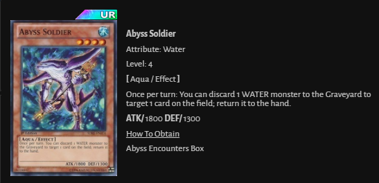
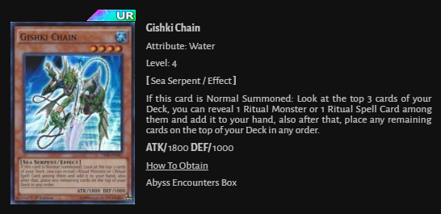
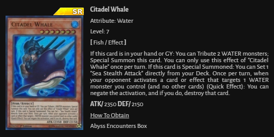
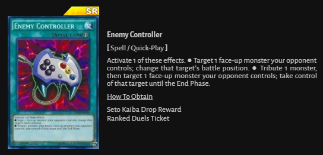
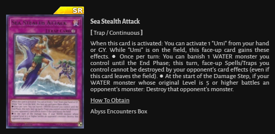
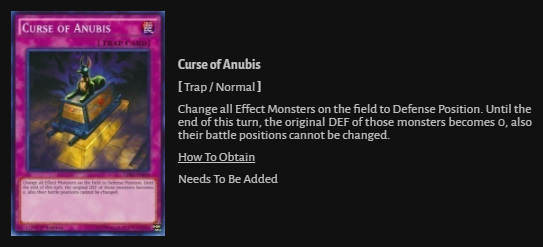
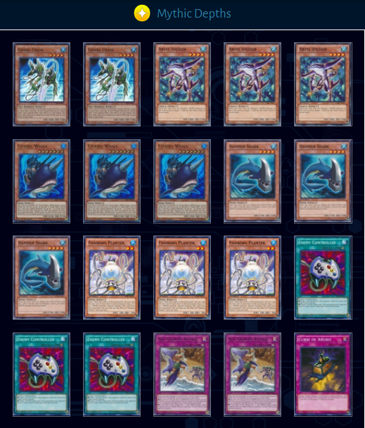

How To Get Carts







Sea Stealth Attack is an incredibly powerful card but surprisingly the deck did not achieve the instant success that people thought it would. Many different builds were conceived, and few saw any success on the tournament circuit on the first week of release.
Nonetheless, Sea Stealth Attack was able to take multiple spots in the Top 32 of the MCS VI and has since become quite a popular KoG deck in the competitive community.
